Chiang Mai
Les elephants
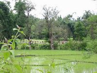
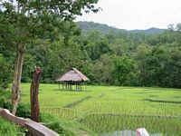
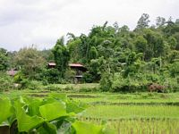
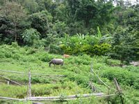
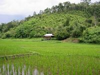
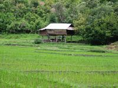
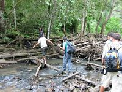
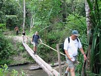
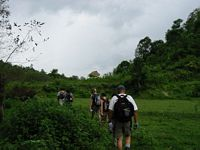
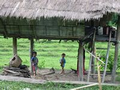
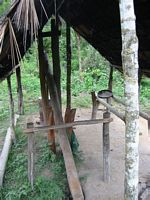
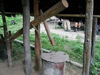
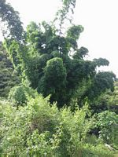
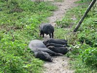
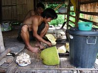
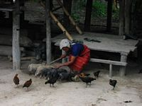
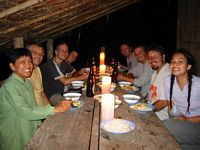
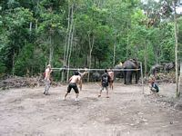
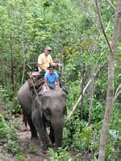
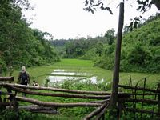
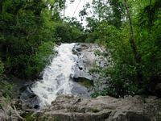
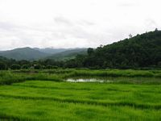
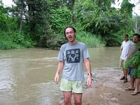
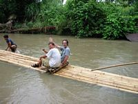
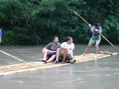
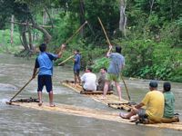
samedi 19 juillet
Une journée à Bangkok, le temps de me renseigner sur les horaires de train.dimanche 20 juillet
Train à 7h30. Assez confortable, repas inclus, comme dans les avions. À côté de moi, Aung, une Thaï avec qui j'arrive à avoir une conversation intelligente : elle est assez critique à propos de son pays, le "pays du sourire". Elle me présente ses deux amies, New et ? ?. Arrivés à Chiang Mai en début de soirée, nous montons dans un pickup et New et moi descendons après 1 ou 2 km. Elle va me déposer dans le quartier des Guest Houses sur son scooter. La traversée de la ville est acrobatique, à cause du trafic et surtout de mon sac à dos énorme, force d'inertie non négligeable surtout lors des slaloms entre les voitures. Le scooter tangue un maximum mais je m'accroche et ça fonctionne. Une fois installé, je fais un tour, on est dimanche soir et c'est le jour du marché, tout le centre est envahi par des stands d'artisanat, de musique locale et de nourriture (locale aussi). Je me perds de place en place, impossible de se repérer dans les rues grouillantes de monde.
lundi 21 juillet
Petite visite chez Super Panda Tour, je m'inscris pour un trek. Ensuite, je me promène dans la ville, le centre-ville est entouré par un canal qui forme un carré.
mardi 22 juillet
C'est parti pour un trek de deux jours, en compagnie de 5 Américains et un couple d'Anglais. La balade est excellente, d'autant que je n'ai pas fait de sport depuis longtemps. Nous visitons quelques villages Hmong et Karen. Finalement nous arrivons dans un petit village où les guides nous préparent le dîner, pendant que nous (les touristes) nous partageons un jackfruit : c'est super-gluant et ça ne part pas en lavant à l'eau. Le jackfruit est énorme, même à 8 nous ne pouvons pas le finir. Nous lançons des morceaux aux animaux : après 1 minute, nous sommes entourés par une ménagerie de cochons, poules et même un chien. Nat (l'Anglaise) finit par prendre le dernier quartier (énorme) du jackfruit et le balance au milieu des bêtes. C'est le chien le plus rapide : il s'en empare et disparaît en courant avec sa prise, trop heureux.{kind=link}
Le repas est très varié, mais les guides mangent dans la pièce à côté (la même chose, mais beaucoup plus épicée). Nous finissons la soirée autour du feu, bonne ambiance.
mercredi 23 juillet
Nous sommes réveillés par les coqs à 4h30 (un coq insomniaque), 5h et 5h30 (le genre toujours en retard). Un petit trek, puis une balade d'une heure à dos d'éléphant. Le guide est à pied et encourage l'éléphant avec des ordres secs. Et aussi un lance-pierres de temps en temps : je ne sais pas où il vise, mais c'est diablement efficace. Les Anglais nous quittent juste après avec un des deux guides car ils ont pris le trek de 3 jours. Les Américains et moi allons déjeuner près d'une cascade. Heureusement il y a des petites cabanes, car il se met à pleuvoir copieusement. Peu après, nous nous retrouvons dans un taxi pour la rivière, pour une descente "bamboo rafting" : rien de vraiment dangereux ni excitant, c'est un peu comme faire de la barque au bord de la Marne, le côté aventure en moins. Mais on rigole bien quand même. Nous rentrons enfin, trempés mais ravis, à Chiang Mai où nous nous séparons.{kind=link}
{kind=link}
Je prends un bus local (le numéro 13) pour Chiang Rai, qui met 4 heures et s'arrêté partout.